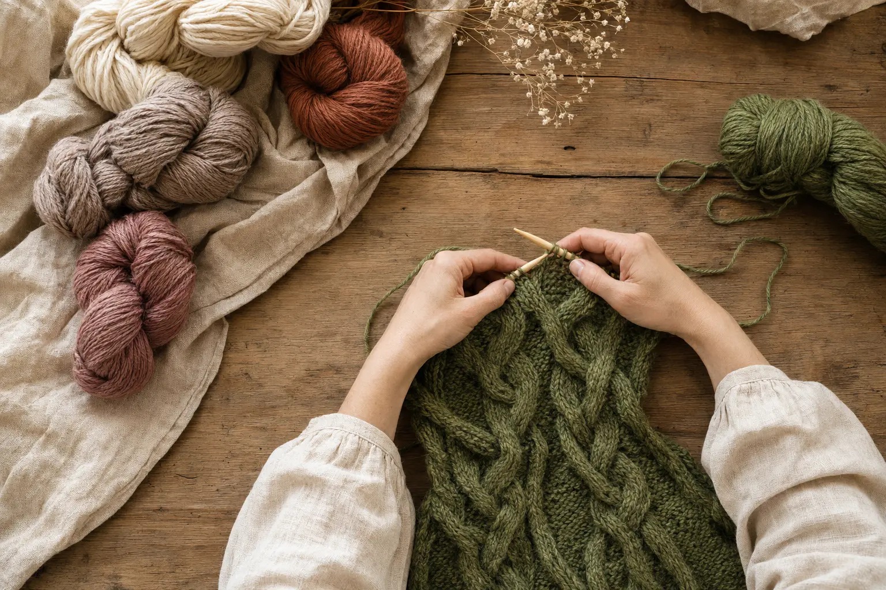
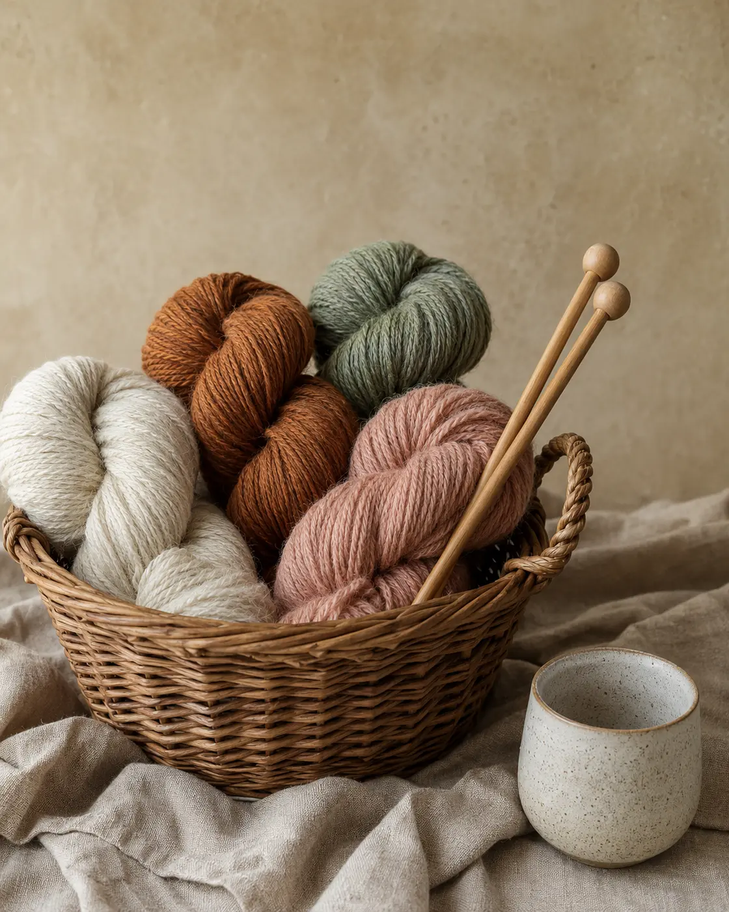
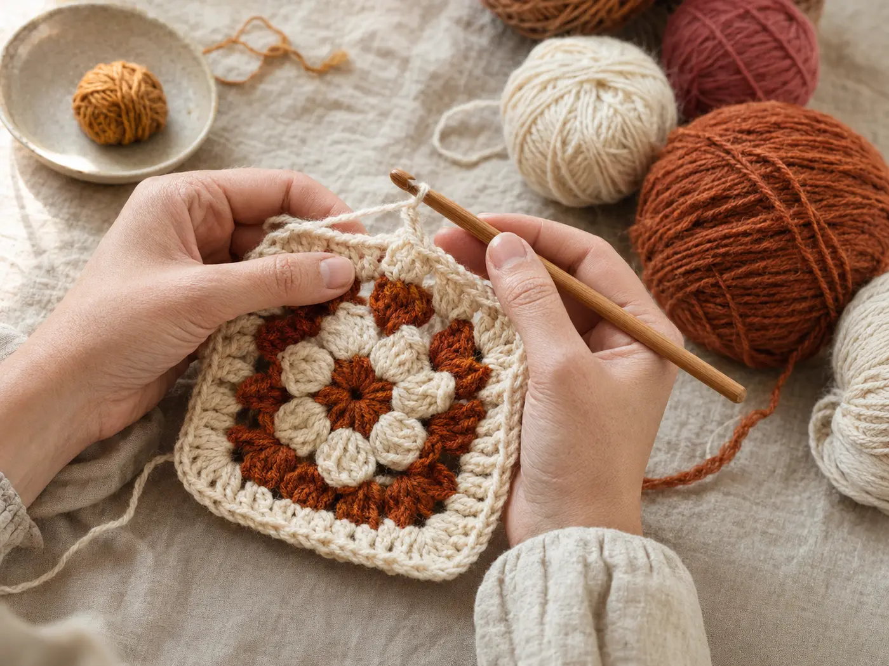
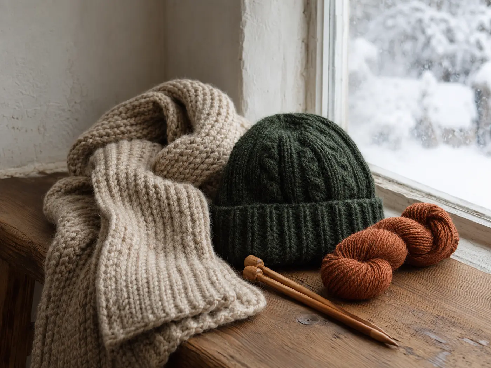
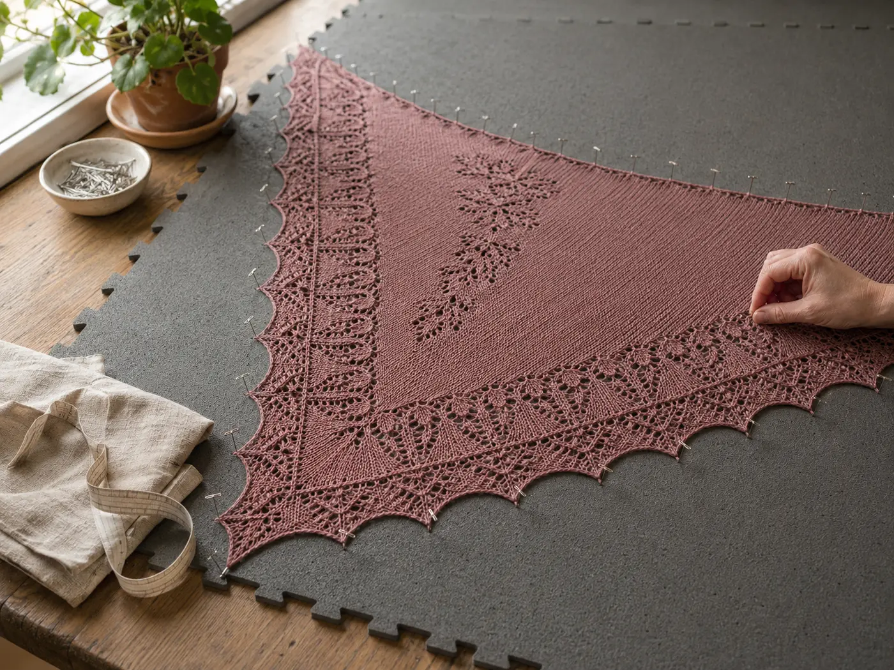
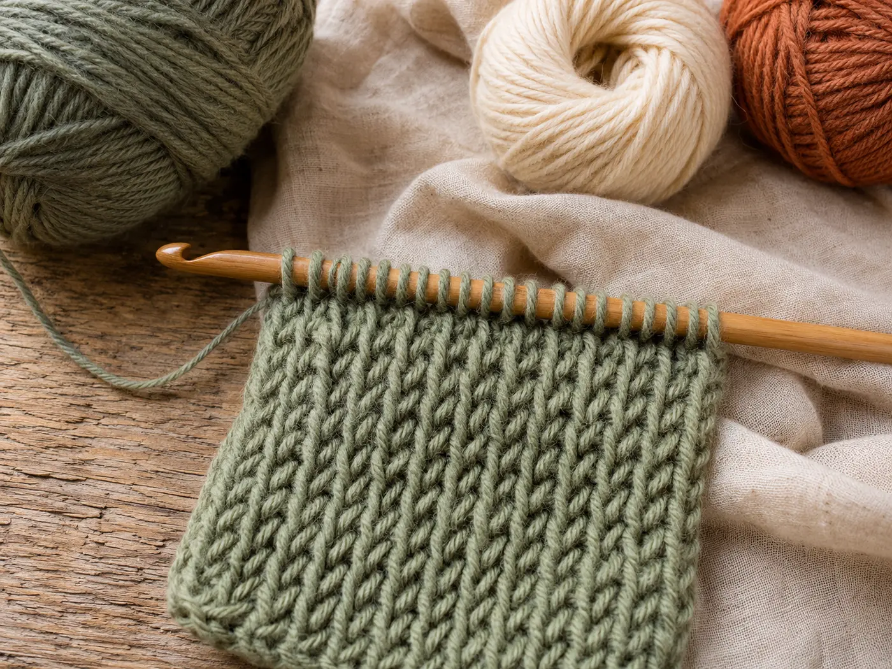

Головна / Натхнення
Речі з характером
Живі фактури, природні кольори й роботи, у яких видно руки авторки.
Змініть колір, довжину чи одну деталь — і проєкт уже стане вашим.
Галерея робіт





Бібліотека схем
Завантажте, роздрукуйте або відкрийте поруч із роботою.
Шарф англійською резинкою
Початковий · спиці
Квадратний мотив для пледа
Середній · гачок
Базова шапка резинкою
Початковий · 4 розміри

Спробуйте нове
Туніське в’язання без поспіху
Довгий гачок, два проходи в кожному ряду й щільна вертикальна фактура.
До довідника